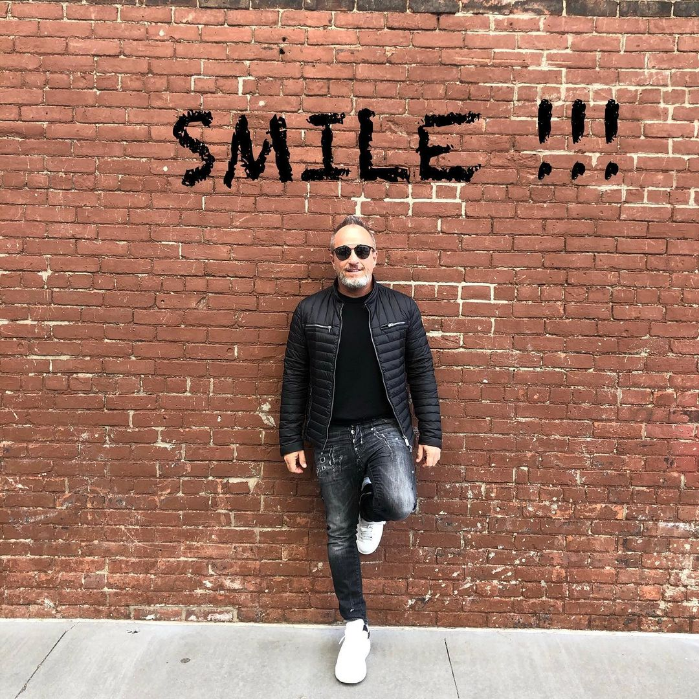

Denti perfetti a un prezzo economico? Ora puoi, con le faccette rimovibili “DentiLine”!
Tutti sogniamo un sorriso bianco, splendente, che ci faccia sentire sicuri e belli. Purtroppo però, non tutti possono permettersi degli interventi odontoiatrici che richiedono tempo e, nella maggior parte dei casi, tanti soldi.
Ecco perché il Dottor Emanuele Puzzilli, il cosiddetto “dentista dei VIP”, ha rilasciato un’intervista esclusiva, solo per noi, per parlare delle nuovissime ed efficientissime faccette rimovibili “DentiLine”, un prodotto che sta cambiando il modo in cui le persone si approcciano al mondo. Scopriamo cosa sono e perché tutti dovrebbero acquistarle subito per avere il tanto agognato “sorriso hollywodiano”!

Dottor Puzzilli, grazie mille per averci concesso questa intervista. Prima di parlare delle faccette rimovibili “DentiLine”, ci parli un po’ di lei e dei suoi studi.
Innanzitutto grazie a voi per avermi dato l’occasione di parlare di questo prodotto e per raccontarmi un po’.
Mi sono laureato in Odontoiatria e Protesi dentaria all’Università di Roma Tor Vergata. Non ho mai smesso di studiare, ho seguito corsi di perfezionamento in parodontologia presso l’Università della California a Los Angeles, con post graduate in implantologia presso l’ospedale San Raffaele di Milano, e conseguendo un master di secondo livello nell’utilizzo del laser in odontoiatria all’Università degli studi di Firenze. Tutto questo insieme a aggiornamenti continui in campo implantoprotesico.
Ho poi creato i miei studi personali, gli White Identity, dove mi occupo di rendere personale ogni intervento e conservare e valorizzare l’unicità di ogni sorriso, rispettando il volto di chi lo ospita.
Durante la mia carriera, ho lavorato con un gran numero di celebrità, ed è per questo che la gente molte volte tende a chiamarmi il “dentista dei VIP”.

Le sue credenziali parlano da sole. La domanda viene spontanea: perché un dentista del suo calibro dovrebbe consigliare un prodotto come le faccette rimovibili “DentiLine”?
Per quanto mi piacerebbe dire che l’unico modo per avere un sorriso splendido sia prenotare una visita nei miei studi, so perfettamente che non tutti possono permettersi procedure odontoiatriche correttive, dato che non tutte le tasche sono uguali.
Lo stesso vale per le protesi, che spesso raggiungono cifre esorbitanti e possono essere piuttosto fastidiose.

Fortunatamente, ai giorni nostri abbiamo la possibilità di avere un sorriso perfetto senza dover ricorrere a queste procedure costose e, in alcuni casi, dolorose. Nel 2021, infatti, negli Stati Uniti sono state create delle faccette rimovibili esclusive: le DentiLine, ideali per ogni tipo di dentatura.
Ci parli più nel dettaglio di queste faccette. A cosa servono, e a chi possono essere utili?
Queste faccette sono consigliate a chiunque voglia avere un sorriso migliore tramite una procedura indolore in grado di rendere di nuovo bianchi i denti e dare maggiore autostima a chi le utilizza.
Ma non solo, le faccette rimovibili “DentiLine” sono anche utili per problemi di diversa natura. Fra questi possiamo trovare:
Sembrano dei dispositivi davvero interessanti. Ma come funzionano?
Una volta indossate, queste faccette hanno la speciale capacità di aderire alla superficie dei denti. In questo modo, sono in grado di ottenere un’impronta individuale dei denti. Utilizzando le faccette rimovibili DentiLine, le persone non sentono alcun fastidio o disagio e dimenticano di averle addosso già dopo i primi 10 minuti di utilizzo.
Come vengono realizzate queste faccette?
Per realizzare le faccette rimovibili “DentiLine”, viene utilizzato un materiale polimerico di alta qualità con un’elevatissima elasticità. Questo significa che l’elastico ha dimensioni universali e si adatta ad ogni tipo di mascella, garantendo una vestibilità sicura per ogni tipo di dentatura.
Oltre all’elasticità, il dispositivo è anche caratterizzato da un’altissima robustezza e dalla resistenza alle macchie. Perciò mangiare, bere vino rosso, tè nero, caffe o fumare non causano danni ai bordi.
Da come lo descrive, sembra davvero un dispositivo miracoloso. Ma andiamo al sodo: quali sono realmente i vantaggi di scegliere le faccette rimovibili “DentiLine”?
Innanzitutto, come abbiamo già detto, queste faccette hanno un costo molto più economico rispetto agli interventi odontoiatrici dolorosi tradizionali. La loro qualità è molto alta, ma il prezzo è più che ragionevole.
Le faccette possono essere indossate sia da uomini che da donne, e si adattano a ogni tipo di bocca grazie al materiale estremamente elastico e resistente. Possono essere indossate senza problemi in modo semplice, veloce e sicuro direttamente a casa, senza dover limare i denti prima dell’applicazione e in completa autonomia.
Le faccette rimovibili “DentiLine” inoltre possono essere indossate 24 ore su 24, 7 giorni su 7, senza che si provi alcun fastidio o disagio.
Ma la cosa migliore di queste faccette è che è possibile mangiare e bere mentre si indossano, senza creare quelle orribili macchie scure dovute agli agenti macchianti presenti in bevande e alimenti. Inoltre, per chi non può farne a meno, si può anche fumare senza doversi preoccupare dei principi attivi presenti nel fumo, dato che queste faccette rimovibili ne assicurano una completa immunità.
In conclusione, dove possiamo acquistare le faccette rimovibili DentiLine?
Assicuratevi di acquistare le faccette rimovibili originali solo attraverso il modulo d’ordine originale. Il mercato è pieno falsi e copie di bassa qualità di queste faccette. Se vedete un prodotto simile a “DentiLine” a un prezzo molto basso, non fidatevi: sono dei truffatori che cercano di vendervi prodotti contraffatti e che potrebbero addirittura peggiorare i problemi dei vostri denti.
Grazie mille, e spero che tutti possano migliorare il proprio sorriso con queste fantastiche faccette rimovibili DentiLine!
trovare il modulo d’ordine ufficiale, grazie al quale potrete acquistare in totale sicurezza un prodotto originale al 100% che vi aiuterà ad avere un sorriso splendente e sentirvi nuovamente sicuri di voi stessi.
Cosa state aspettando? Ordinate ora le vostre faccette rimovibili DentiLine per denti bianchi e perfetti!
Ad oggi, il numero di confezioni gratuite DentiLine è pari a:

Aggiungi un commento
Fabio Ciccolella
Qualcuno ha provato queste faccette, sono davvero così buone?
Mi piace. 13 Commenta. 12 min
Rossano Gianni
Ho perso i denti anteriori a causa di uno sport che pratico. E ho bisogno di un sorriso perfetto al lavoro, quindi l'acquisto di DentiLine mi ha salvato la vita. L'ordine è stato effettuato tramite il modulo d'ordine ufficiale. Il prezzo delle faccette era davvero irrisorio rispetto alla cifra richiesta dal dentista per le protesi. Sono soddisfatto: la mia bocca ha un aspetto gradevole, non provo sensazioni spiacevoli e non ho problemi sul lavoro.
Mi piace. 6 Commenta. 13 min
Silvana Marzillo
Anch'io, a causa dei miei denti rari e piccoli, avevo grossi complessi. Grazie all'acquisto di queste faccette, ho potuto ottenere un sorriso bellissimo per ogni occasione. Le faccette sono facili da riparare. Quando li applico, la mia bocca ha un aspetto del tutto naturale. Quando sorrido, ricevo i complimenti dei miei cari e dei colleghi. Vorrei averli acquistati prima.
Mi piace. 19 Commenta. 25 min
Enrico Zimbardo
Qualcuno mandi una foto per favore!
Mi piace. Commenta. 46 min
Oscar Sitzia
La mamma lavora nel settore sociale ed è a contatto con le persone ogni giorno, quindi, oltre ad avere un aspetto impeccabile, dovrebbe anche avere un sorriso decente. Sono d'accordo, con denti problematici è difficile sorridere, anche quando ci si fa curare. Volevo aiutarla a non soffrire di questo problema e le abbiamo regalato delle faccette rimovibili DentiLine. Ora mia madre ha un sorriso hollywoodiano smagliante. Dice di sentirsi molto bene e di riuscire a mangiare comodamente, dopo di che si sciacqua semplicemente la bocca e non prova assolutamente alcun fastidio. La mamma ha le faccette da un mese e mezzo e non si sono affatto scurite, sono in perfette condizioni. È molto contenta.
Mi piace. 43 Commenta. 1 ora fa
Simona Barbone
Ecco una mia foto, sembra molto naturale!
Mi piace. 3 Commenta. 1 ora fa
Gabriele Cavalli
Queste faccette sono un buon modo per migliorare le condizioni dei denti. E lo è davvero. I denti non devono essere preparati prima del montaggio, come la correzione dei denti o del morso, ma non possono nemmeno essere paragonati alle faccette. Le faccette correggono i denti, ma non con la stessa efficacia. Le false affermazioni sulla correzione del morso servono solo come anti-pubblicità per un prodotto efficace progettato per uno scopo completamente diverso.
Mi piace. Commenta. 2 ore fa
Massimo Siciliano
Ho sentito parlare a lungo di queste faccette rimovibili: sono una buona alternativa allo sbiancamento dei denti. Ma non ho mai osato comprarli fino ad ora. Ho deciso solo un mese fa. Sono stati consegnati abbastanza rapidamente, grazie mille. Sono molto soddisfatta della qualità, ho ordinato tramite il modulo d'ordine ufficiale. L'installazione è stata molto semplice e non ha comportato alcun problema. Si adattano perfettamente e non causano alcun fastidio in bocca. Tutto è perfetto. Si rimuove anche abbastanza facilmente. Cinque stelle!
Mi piace. 12 Commenta. 2 ore fa
Elisa Ferrari
Lavoro nella sfera pubblica e ho contatti quotidiani con molte persone. I miei denti sono stati il mio complesso fin dall'infanzia. I miei genitori non hanno curato i miei denti da latte, li hanno solo argentati. In tutte le foto ho dei monconi neri al posto dei denti, credo che possiate capire come abbiano riso di me. Poi sono cresciuti i molari e non mi piacevano nemmeno quelli: le zanne non combaciavano e i due denti anteriori erano cambiati, il colore dello smalto era giallastro, insomma, tutt'altro che un sorriso hollywoodiano. Il mio dentista mi ha consigliato di provare le faccette rimovibili perché sono economiche, il risultato è rapido e non devo portare l'apparecchio per un anno o addirittura due e pagare un sacco di soldi. Ho deciso di sperimentare, li porto da un anno e sono felice: i miei denti sono belli e bianchi.
Mi piace. 53 Commenta. 2 ore fa
Leonardo Spagnolo
Le faccette sono piuttosto costose e non tutti possono permettersele, ma sembra esserci una valida alternativa: le faccette rimovibili DentiLine. Le faccette sono piuttosto comode, facili da applicare (all'inizio ci vuole un po' di abitudine), ma resistono abbastanza bene. Non mi sono assolutamente pentita dell'acquisto, li porterò fino a quando la clinica non metterà le faccette permanenti. A proposito, se si indossa costantemente DentiLine, i denti diventano più uniformi, ve lo dico per esperienza personale. Il prezzo è abbastanza ragionevole, quindi vale la pena provarlo.
Mi piace. 16 Commenta. 2 ore fa
Francesco Lo Re
Queste faccette tengono bene sui denti? Non cadono?
Mi piace. 2 Commenta. 2 ore fa
Antonio Monteleone
No, non cadono affatto, non ho avuto alcun problema.
Mi piace. 11 Commenta. 2 ore fa
Simone De Rose
Eccellenti, soprattutto se paragonato al prezzo delle faccette permanenti. Si può ottenere un bel sorriso bianco con denti dritti a un prezzo piuttosto basso. Tuttavia, per qualche motivo, ho sempre pensato che tali faccette causassero un certo disagio in bocca e che non ci si potesse abituare ad esse come non ci si può abituare agli apparecchi ortodontici. Ma si dice che ci si abitua rapidamente e che non si sentono nemmeno in bocca: si dice che sono fatti di un materiale di altissima qualità che non disturba. Lo stesso vale per il cibo. Ma anche molti dicono che tutto è abbastanza comodo e senza problemi. È da un po' che li tengo d'occhio. Sono facili da mantenere e il fatto che non si scuriscano con il passare del tempo a causa del mangiare e del bere, significa che sono fatti di un ottimo materiale. Li porterò anch'io!
Mi piace. 33 Commenta. 2 ore fa
Valeria Marchitti
I miei denti anteriori erano pieni di otturazioni e c'era una grande differenza di colore, con un aspetto molto brutto. Ho deciso di acquistare delle faccette rimovibili fino a quando non avrei potuto mettere da parte i soldi per delle corone permanenti di qualità. Il prezzo è abbastanza accessibile. La qualità è buona. All'inizio mi sembravano un po' strani in bocca, ma mi sono subito abituata. Li "indosso" al lavoro. Non mi irritano le gengive e non influiscono sulla mia dizione. Si adattano bene e non fanno pressione sui denti. Possono essere indossati anche in presenza di lacune e vuoti. Posso bere qualsiasi tipo di bevanda con esse, compresi succhi di frutta, caffè e tè: non si scuriscono. Sono facili da curare. In caso di dubbi, li raccomando.
Mi piace. 23 Commenta. 3 ore fa
Stefano Di Tata
Li ho ordinati anch'io per me. Si adattano bene, si tengono saldamente e non si deve temere che cadano nel momento più inopportuno. L'aspetto è molto naturale, non si avverte alcun fastidio e nel complesso non ho riscontrato alcuno svantaggio. Li indosso e il mio sorriso diventa immediatamente smagliante. Sono realizzati in materiale di qualità, non si scuriscono a causa di cibo e bevande, credo che dureranno a lungo.
Mi piace. 6 Commenta. 3 ore fa
Anna Iuliano
Ora sono in sconto, sei fortunata, purtroppo li ho già comprati in passato e ad un prezzo più alto quando non c'era la promozione...
Mi piace. 6 Commenta. 3 ore fa